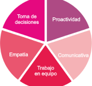

CONOCIMIENTOS TÉCNICOS


2015-2016
Máster Universitario en Gestión
de las TIC Universidad de Sevilla,
España.
2014-2015
Máster de ingeniería en computadores y redes.
Universidad de Sevilla, España.
2008-2011
Administrador de Sistemas
Universidad Bicentenaria de Aragua, Venezuela
625258080
diana.romecoy@gmail.com
B Permiso de conducir
Disponibilidad para viajar
Diana Roemro Coy
41002, Sevilla
2015-2016
ASOCIACION THAISMON
Recepcionoista
Febrero 2020 - Mayo 2020
MULTIGESTIONES AYDIN S.L.
Teleoperador Monitoreo de Pacientes
Mayo 2019 - Agosto 2019
KONECTA SERVICIOS BPO S.L.
Teleoperador Servicios de Soporte técnico
Septiembre 2018 - Marzo 2019
EXTRAVAGANZA COMUNICATION
Aux Administrativo Manejo de Base de Datos
Marzo 2009 - Mayo 2014
MARINE Y ASOCIADOS C.A.
Asistente en Desarrollo y Gestión de Proyectos Multidisciplinarios, Manejo de SAP
en las Empresas Basicas CORPOELEC, VHPC, VENALUM, SIDETUR
